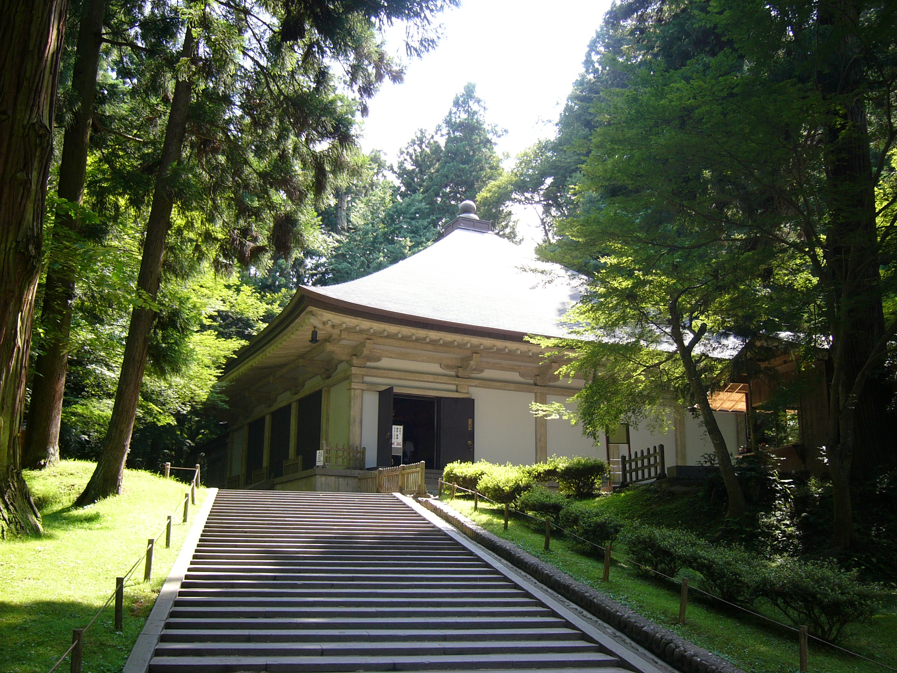

岩手の名所
中尊寺金色堂

中尊寺金色堂（ちゅうそんじこんじきどう）は、岩手県西磐井郡平泉町の中尊寺にある
平安時代後期建立の仏堂である。奥州藤原氏初代藤原清衡が天治元年（1124年）に建立したもので、
平等院鳳凰堂と共に平安時代の浄土教建築の代表例であり、当代の技術を集めたものとして
国宝に指定されている。堂の所有者は宗教法人金色院である。
橋野高炉跡
橋野高炉跡（はしのこうろあと）は、岩手県釜石市橋野町に所在する高炉跡。
国の史跡に指定（1957年）されている。世界遺産「明治日本の産業革命遺産
製鉄・製鋼、造船、石炭産業」の構成資産となっている。登録名は「橋野鉄鉱山」。
水戸藩の那珂湊反射炉に大砲用の銑鉄を供給するため南部藩によって建設された。
御所野遺跡
御所野遺跡（ごしょのいせき）は、岩手県二戸郡一戸町で発見された縄文時代の環状集落遺跡。
所在地は一戸町岩舘字御所野。1993年（平成5年）、国の史跡に指定された。
遺跡は公園として整備され、竪穴建物、掘立柱建物、配石遺構などによる集落が再現されている。
公園内に博物館も併設されている。